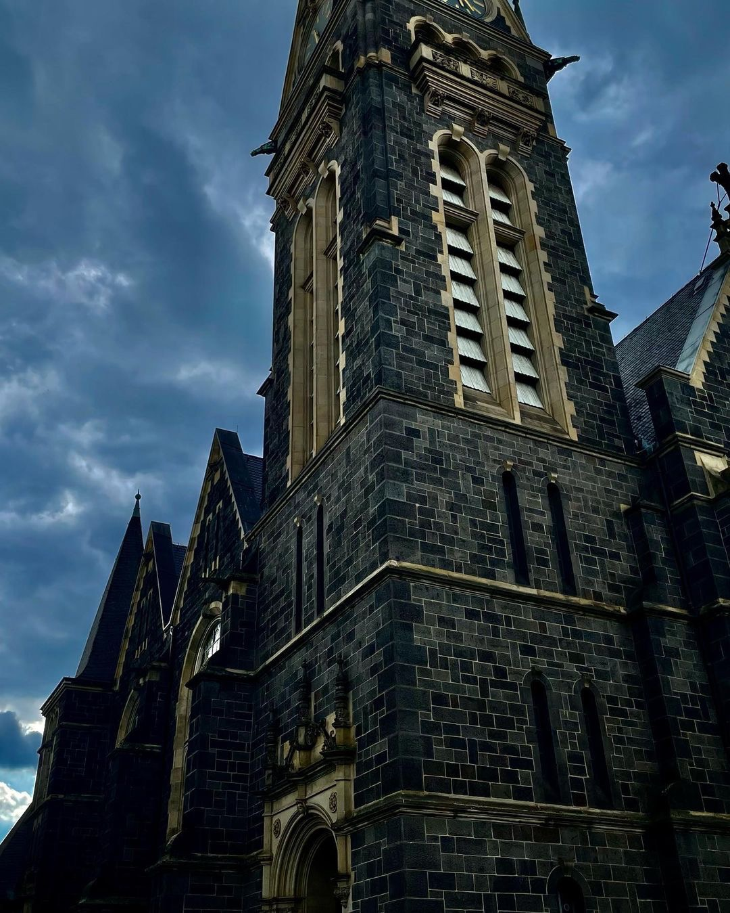
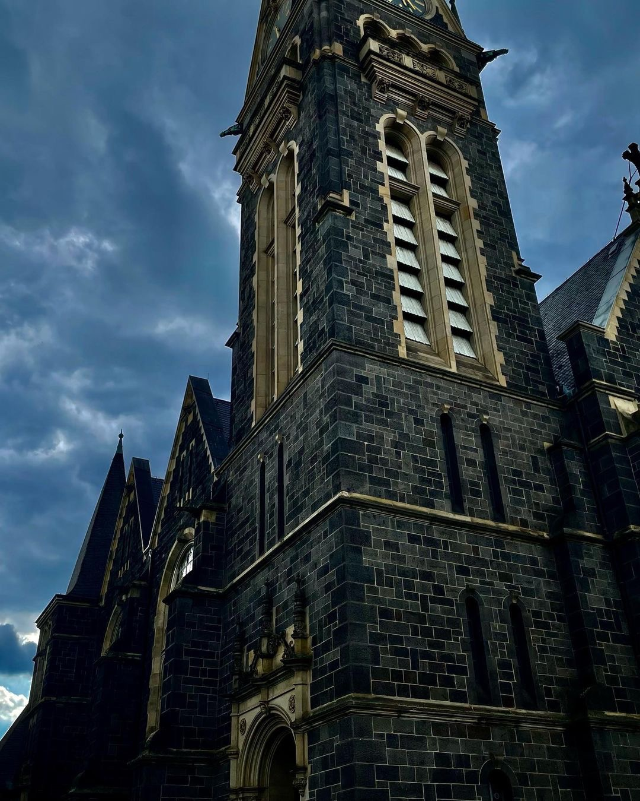
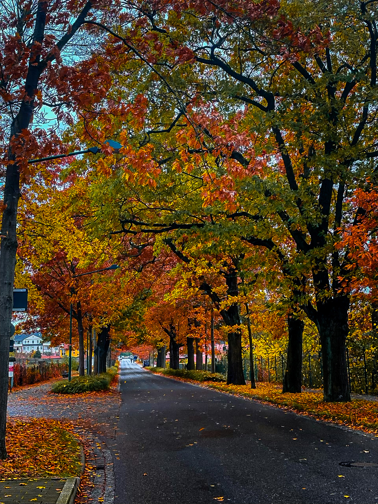
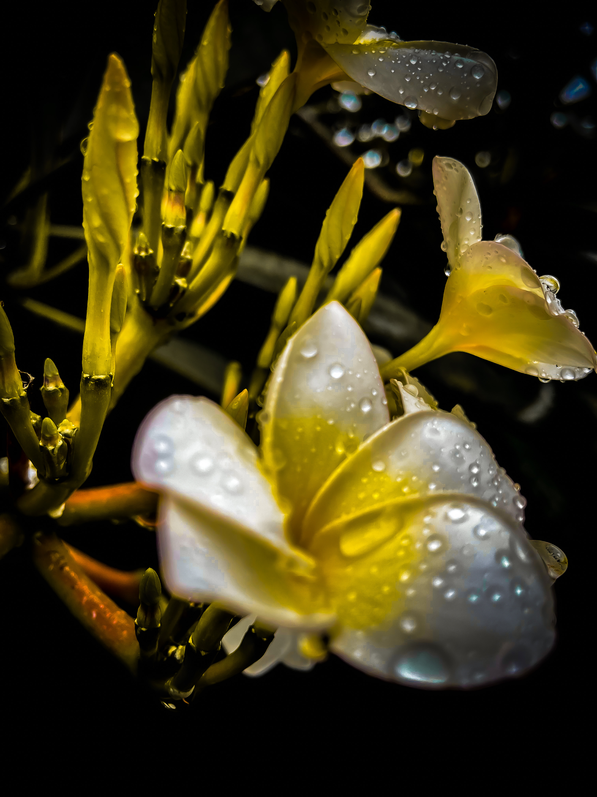
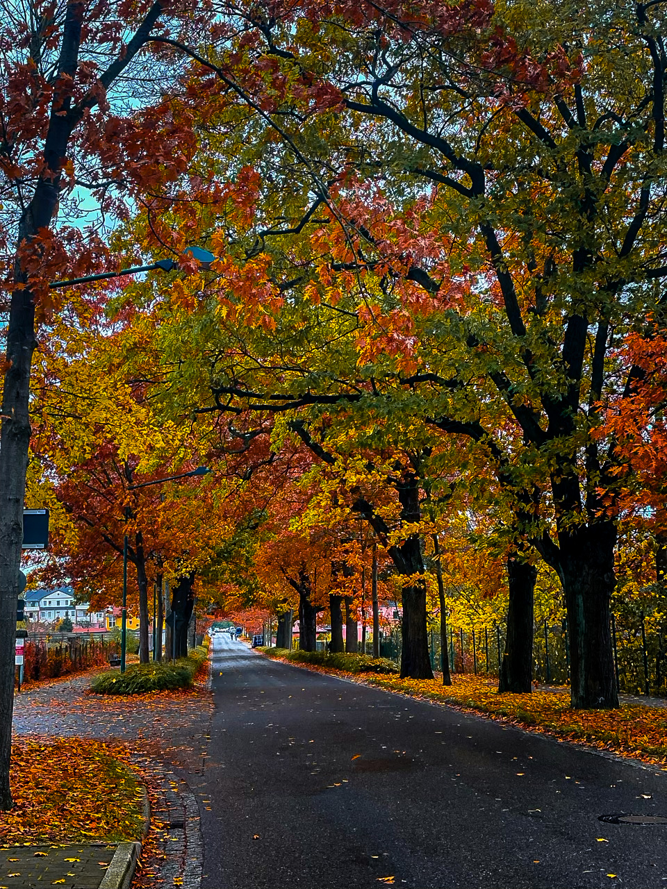
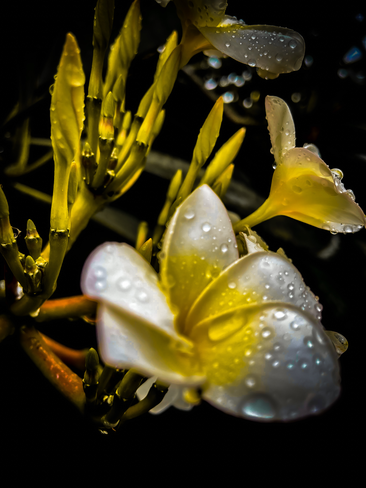

Here to turn authentic stories into art
that lasts forever.
Hey there, I’m Adams, the person behind the camera, dedicated to capturing the magic of nature through my lens. My journey into photography began with a deep love for art, culture, therapy, and love. It all started with a passion for sharing the beauty and hidden meanings of nature. Over time, I transitioned to the digital realm while maintaining a symbolic quality in my work through my captures and edits. For me, it's all about those authentic moments—the stolen glances, the heartfelt embraces, the little details that make your day uniquely yours. That’s where the magic happens.
Beyond my pursuits in photography, you'll often discover me engrossed in literature, dedicating considerable time to web development endeavors, or nurturing innovative business concepts through project-based initiatives. I grew up with the passion for entrepreneurship, with aspirations of eventually franchising my ventures. My love for meeting new people with different talents and skills reaffirms my belief that my professional fulfillment lies in collective endeavors aimed at realizing shared objectives.
Whether you’re planning to get a photography artwork:
- artwork that uses symbols, motifs, or allegorical elements to represent abstract concepts, emotions, or societal issues. These symbols may have cultural, historical, or personal significance.
- artwork that aims to evoke emotional responses from viewers by tapping into universal themes or experiences. It can convey complex emotions or narratives through the use of symbols and imagery.
- artwork that invites interpretation and encourages viewers to engage with the piece on a deeper level. Each symbol may carry multiple layers of meaning, allowing for diverse interpretations based on individual perspectives.
- artworks that serve as a form of social commentary, addressing political, cultural, or environmental issues. Artists use symbols to critique or question societal norms, values, and power structures.
Because for me, it's not just about taking pictures—it's about capturing the moments and indept meaning to nature, culture, history, politics and emotions that make the artwork truly valuable and unforgettable.
 


